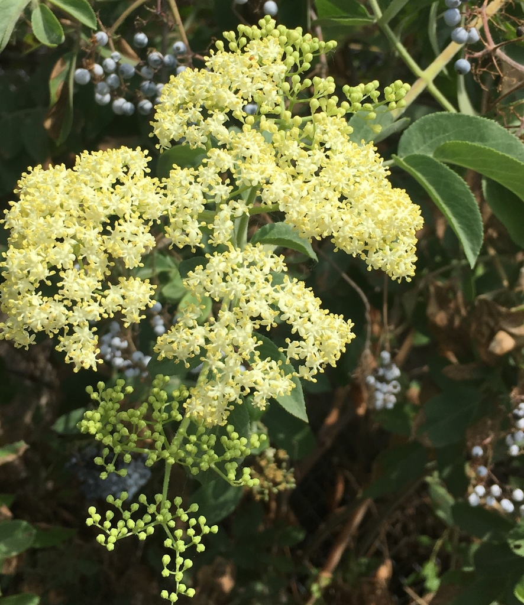
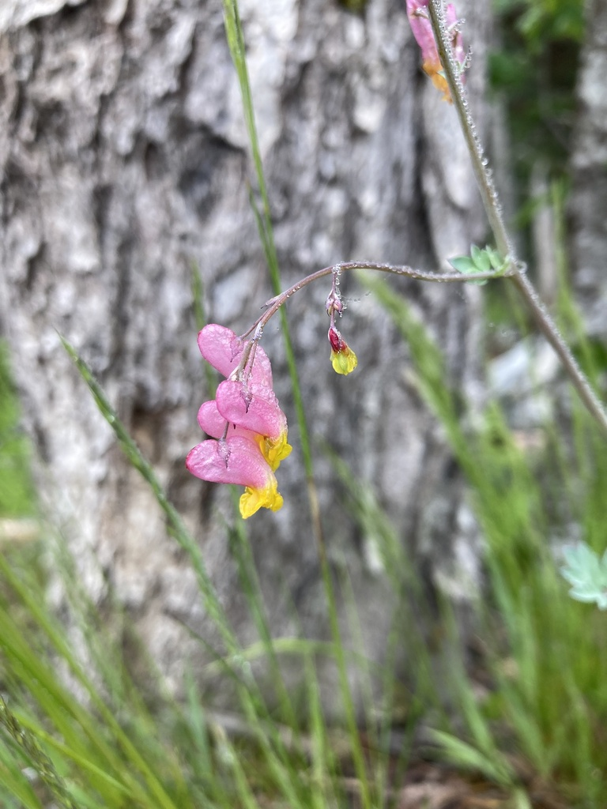
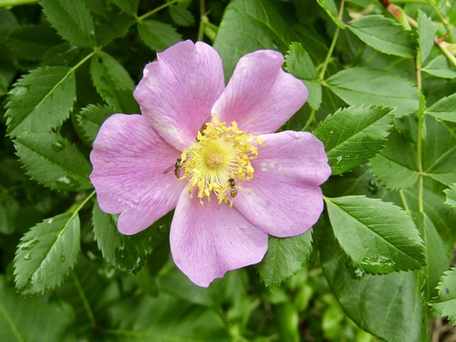
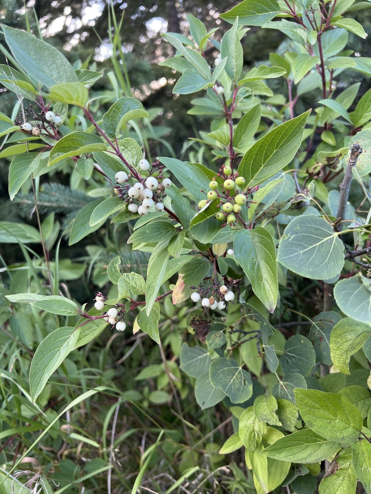
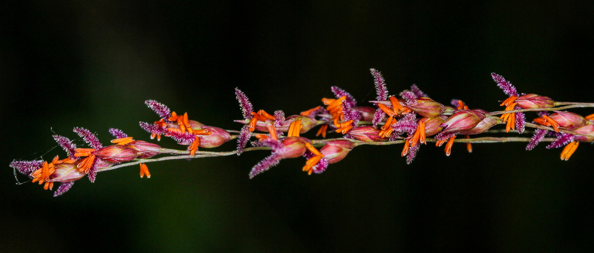
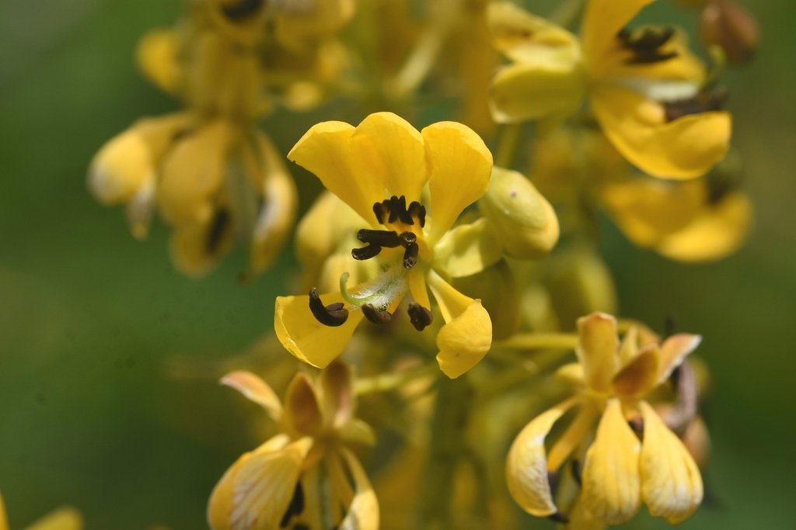

Allegheny ServiceberryAmelanchier laevisShrub/Tree

American ElderberrySambucus nigra ssp. canadensisShrub

American HazelnutCorylus americanaShrub

American Hop HornbeamOstrya virginianaTree

American HornbeamCarpinus carolinianaTree

American SpikenardAralia racemosaPerennial

Anise HyssopAgastache foeniculumPerennial

Aromatic AsterSymphyotrichum oblongifoliumPerennial

Bear OakQuercus ilicifoliaShrub/Tree

Bebb's Oval SedgeCarex bebbiiSedge

Bicknell's SedgeCarex bicknelliiSedge

Biennial GauraGaura biennisPerennial

Bishop's CapMitella diphyllaPerennial

Black CohoshActaea racemosaPerennial

Black-eyed SusanRudbeckia hirtaBiennial

Blue GramaBouteloua gracilisGrass

Blue MistflowerConoclinium coelestinumPerennial

Blue VervainVerbena hastataPerennial

Blue Wild IndigoBaptisia australisPerennial

BonesetEupatorium perfoliatumPerennial

Bottle GentianGentiana andrewsiiPerennial

Bristle-leaf SedgeCarex eburneaSedge

Brown-eyed SusanRudbeckia trilobaBiennial

Bush's ConeflowerEchinacea paradoxaPerennial

Butterfly WeedAsclepias tuberosaPerennial

ButtonbushCephalanthus occidentalisShrub

Canada AnemoneAnemone canadensisPerennial

Canada Milk VetchAstragalus canadensisPerennial

Cardinal FlowerLobelia cardinalisPerennial

Christmas FernPolystichum acrostichoidesEvergreen Fern

Common Wood SedgeCarex blandaPerennial

Coral HoneysuckleLonicera sempervirensVine

Cream GentianGentiana albaPerennial

Crested Oval SedgeCarex cristatellaSedge

Culver's RootVeronicastrum virginicumPerennial

Dense Blazing StarLiatris spicataPerennial

DogbaneApocynum cannabinumPerennial

Downy Painted CupCastilleja sessilifloraPerennial

Downy Wood MintBlephilia ciliataPerennial

Early GoldenrodSolidago junceaPerennial

Eastern BluestarAmsonia tabernaemontanaPerennial

Eastern ServiceberryAmelanchier canadensisShrub/Tree

Eastern Star SedgeCarex radiataSedge

Elm-leaved GoldenrodSolidago ulmifoliaPerennial

False AsterBoltonia asteroidesPerennial

False Solomon's SealMaianthemum racemosumPerennial

FireweedChamaenerion angustifoliumPerennial

Flat-topped AsterDoellingeria umbellataPerennial

Foam FlowerTiarella stoloniferaPerennial

Foxglove BeardtonguePenstemon digitalisPerennial

Fringed SedgeCarex crinitaGrass/Sedge

Goat's RueTephrosia virginianaPerennial

Golden AlexandersZizia aureaPerennial

Golden RagwortPackera aureaPerennial

Grass-leaved GoldenrodEuthamia graminifoliaPerennial

Great Blue LobeliaLobelia siphiliticaPerennial

Great Canada St. John's WortHypericum majusPerennial

Great St. John's WortHypericum pyramidatumPerennial

Hairy BeardtonguePenstemon hirsutusPerennial

Hairy Wood MintBlephilia hirsutaPerennial

HarebellCampanula rotundifoliaPerennial

Hoary VervainVerbena strictaPerennial

Indian GrassSorghastrum nutansGrass

Indian PaintbrushCastilleja coccineaPerennial

Lady FernAthyrium filix-feminaPerennial Fern

Lance-leaf CoreopsisCoreopsis lanceolataPerennial

Large-Flowered BeardtonguePenstemon grandiflorusPerennial

Large-Leafed RaspberryRubis ordidatusPerennial Shrub

Little BluestemSchizachyrium scopariumPerennial Grass

Mad-dog SkullcapScutellaria laterifloraPerennial

Maidenhair FernAdiantum pedatumPerennial Fern

Meadow Blue VioletViola sororiaPerennial

Michigan LilyLilium michiganensePerennial

Midland Shooting StarDodecatheon meadiaPerennial

Monkey FlowerMimulus ringensPerennial

Mountain MintPycnanthemum virginianumPerennial

New England AsterSymphyotrichum novae-angliaePerennial

New Jersey TeaCeanothus americanusShrub

New York AsterSymphyotrichum novi-belgiiPerennial

New York IronweedVernonia noveboracensisPerennial

NinebarkPhysocarpus opulifoliusShrub

Nodding OnionAllium cernuumPerennial

Obedient PlantPhysostegia virginianaPerennial

Ohio SpiderwortTradescantia ohiensisPerennial

Orange ConeflowerRudbeckia fulgida var. sullivantiiPerennial

Pale CorydalisCorydalis sempervirensPerennial

Pale Purple ConeflowerEchinacea pallidaPerennial

Partridge BerryMitchella repensPerennial

Pasture RoseRosa carolinaDeciduous Shrub

PawpawAsimina trilobaTree

Pearly EverlastingAnaphalis margaritaceaPerennial

Poverty Oat GrassDanthonia spicataGrass

Prairie AlumrootHeuchera richardsoniiPerennial

Prairie Blazing StarLiatris pycnostachyaPerennial

Prairie DropseedSporobolus heterolepisGrass

Prairie PhloxPhlox pilosaPerennial

Prairie SmokeGeum triflorumPerennial

Prairie WillowSalix humilisShrub

Purple ConeflowerEchinacea purpureaPerennial

Purple False FoxgloveAgalinis purpureaPerennial

Purple Love GrassEragrostis spectabilisGrass

Purple-sheathed Graceful SedgeCarex gracillimaSedge

Pussy WillowSalix discolorShrub/Tree

PussytoesAntennaria plantaginifoliaPerennial

Rattlesnake MasterEryngium yuccifoliumPerennial

Red Osier DogwoodCornus sericeaShrub

Rose MilkweedAsclepias incarnataPerennial

Round-headed Bush CloverLespedeza capitataPerennial

Royal CatchflySilene regiaPerennial

Side-oats GramaBouteloua curtipendulaGrass

Sky Blue AsterSymphyotrichum oolentangiensePerennial

Slender Mountain MintPycnanthemum tenuifoliumPerennial

Slender-leaved False FoxgloveAgalinis tenuifoliaPerennial

Smooth Blue AsterSymphyotrichum laevePerennial

Smooth Yellow False FoxgloveAureolaria flavaPerennial

SneezeweedHelenium autumnalePerennial

SpicebushLindera benzoinShrub

Spotted Bee BalmMonarda punctataPerennial

Spotted Joe Pye WeedEutrochium maculatumPerennial

Spotted St. John's WortHypericum punctatumPerennial

Swamp LousewortPedicularis lanceolataPerennial

Sweet Black-eyed SusanRudbeckia subtomentosaPerennial

Sweet CicelyOsmorhiza claytoniiPerennial

Switch GrassPanicum virgatumGrass

Tall BellflowerCampanulastrum americanumBiennial

Tall IronweedVernonia giganteaPerennial

Tall LarkspurDelphinium exaltatumPerennial

Tall ThimbleweedAnemone virginianaPerennial

ThimbleweedAnemone cylindricaPerennial

Virgin's BowerClematis virginianaVine

Virginia WaterleafHydrophyllum virginianumPerennial

White TurtleheadChelone glabraPerennial

White Wild IndigoBaptisia albaPerennial

Whorled MilkweedAsclepias verticillataPerennial

Wild BergamotMonarda fistulosaPerennial

Wild Blue PhloxPhlox divaricataPerennial

Wild GeraniumGeranium maculatumPerennial

Wild GingerAsarum canadensePerennial

Wild LupineLupinus perennisPerennial

Wild PetuniaRuellia humilisPerennial

Wild QuinineParthenium integrifoliumPerennial

Wild Red ColumbineAquilegia canadensisPerennial

Wild SennaSenna hebecarpaPerennial

Winged LoosestrifeLythrum alatumPerennial

WinterberryIlex verticillataShrub

Witch HazelHamamelis virginianaDeciduous Shrub

Wood BetonyPedicularis canadensisPerennial

Woodland SunflowerHelianthus divaricatusPerennial

Yellow ConeflowerRatibida pinnataPerennial

Yellow Star GrassHypoxis hirsutaPerennial

Zig Zag GoldenrodSolidago flexicaulisPerennial
No plants found